Examples¶
Spawn on Surface Examples¶
The following examples help illustrate the effect of each of the Spawn on Surface parameter. Each example uses the scene detailed below.
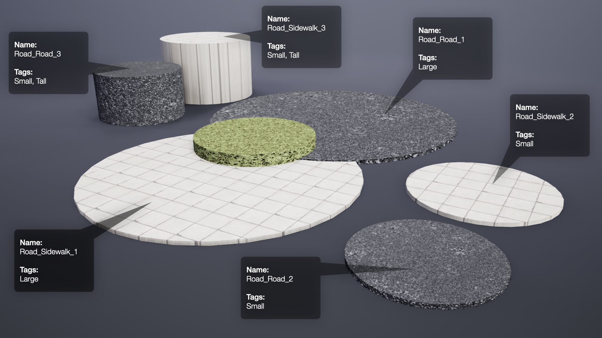
Example #1
Placement by surface name only.

Example #2
This example is the same as above with only the Random seed value changed. Not only does this result in different placement of the boxes, it also results in a different density, randomly chosen from within the specified range.

Example #3
Placement by tag only.
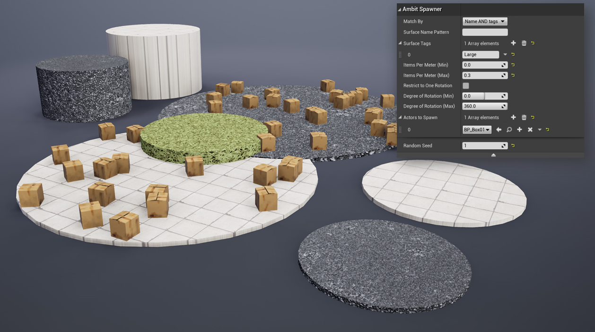
Example #4
Placement requiring both surface name and tag to match the provided values.
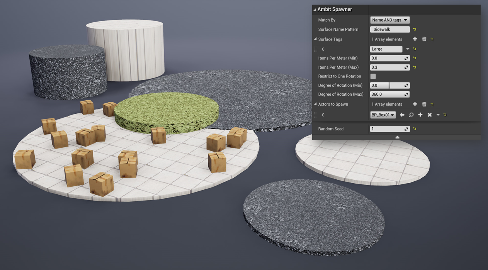
Example #5
Placement requiring either surface name or tag to match the provided values.
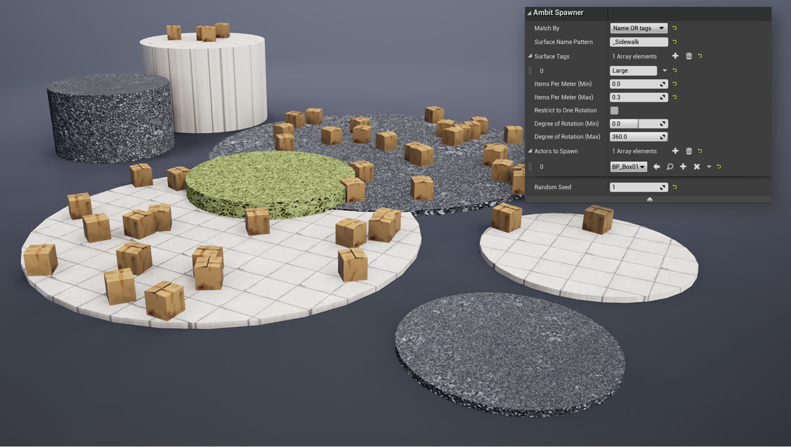
Example #6
Placement requiring both surface name or tag to match the provided values, and with rotation restricted to one rotation (90 degrees).

Example #7
Placement requiring either surface name or tag to match the provided values, and with rotation restricted to a range (45-90 degrees).

Example #8
Placement requiring either surface name and tag to match the provided values, and with two Unreal Engine actor types to spawn.
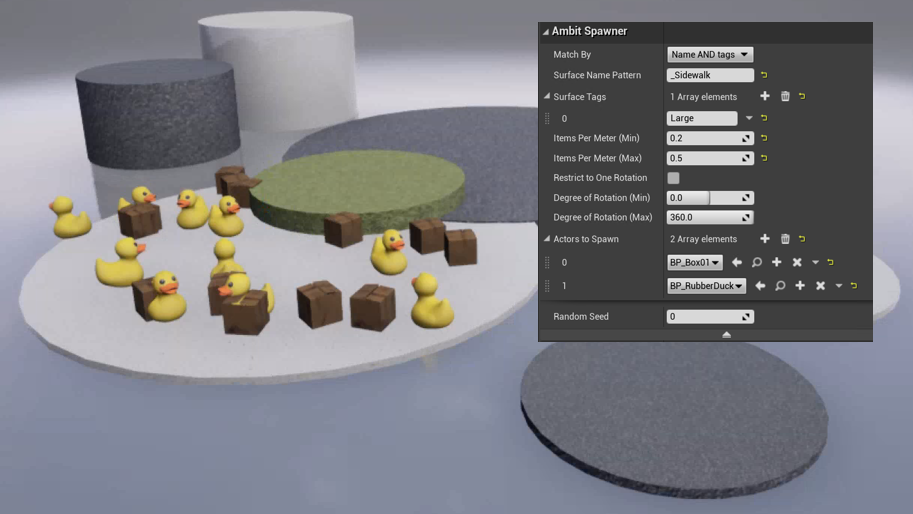
Spawn in Volume Examples¶
Example 1
Placement by bounding box only, without Snap to Surface Below or specified surfaces.
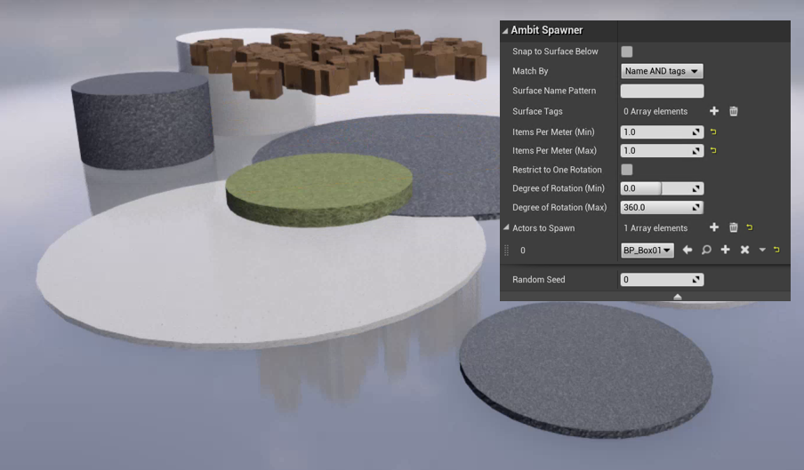
Example 2
Placement by bounding box and Snap to Surface Below, without specified surfaces.
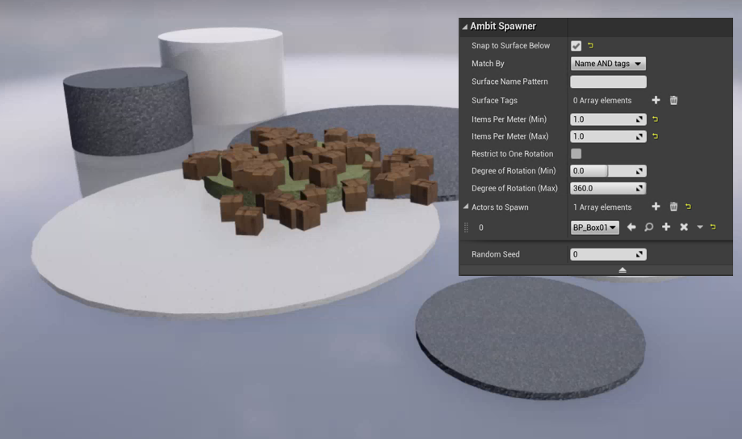
Example 3
Placement by bounding box and specified surfaces.
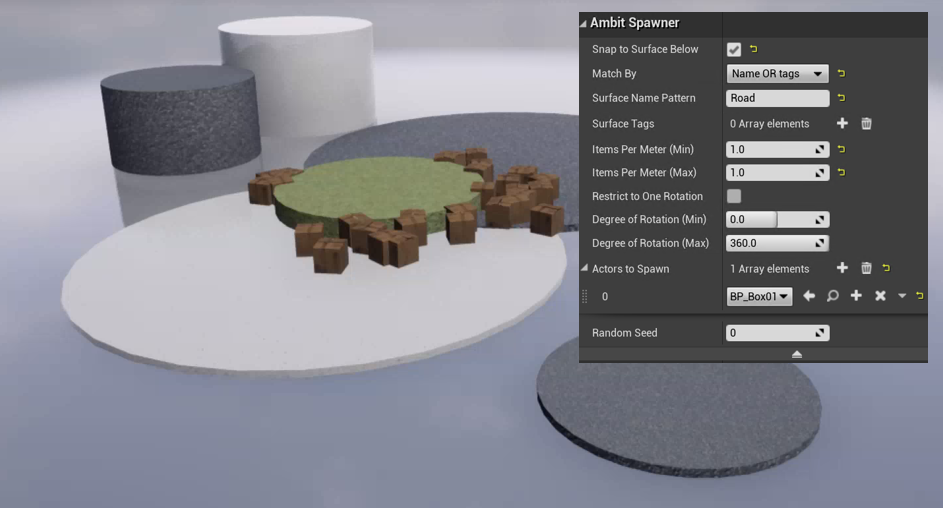
Spawn on Path Examples¶
Example 1
Placement by spline only, without Snap to Surface Below or specified surfaces.
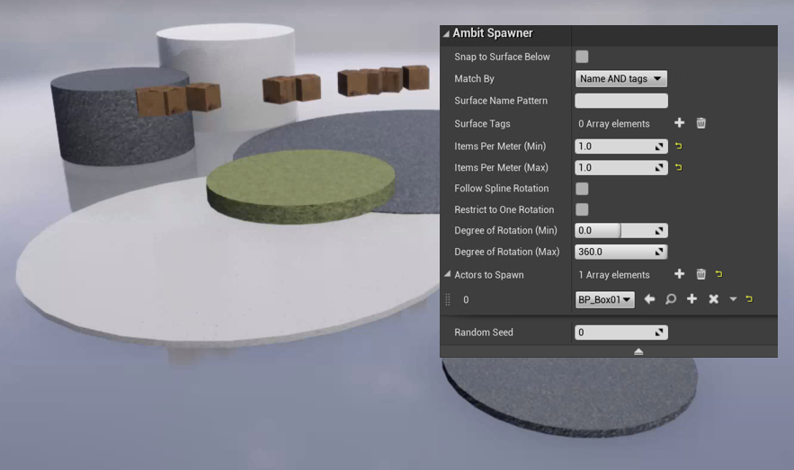
Example 2
Placement by spline and Snap to Surface Below, without specified surfaces.
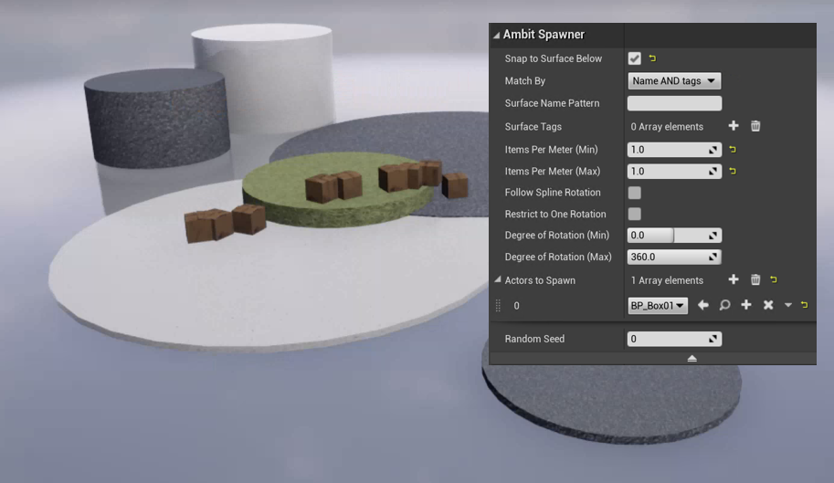
Example 3
Placement by spline and specified surfaces (name pattern Road).

Example 4
Placement by spline, Snap to Surface Below, and Follow Spline Rotation. The spline was edited to include a curve.
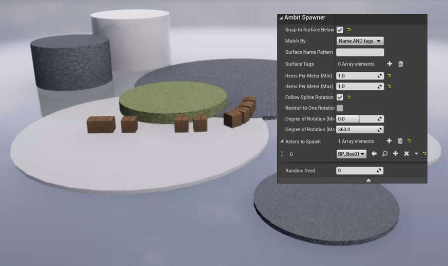